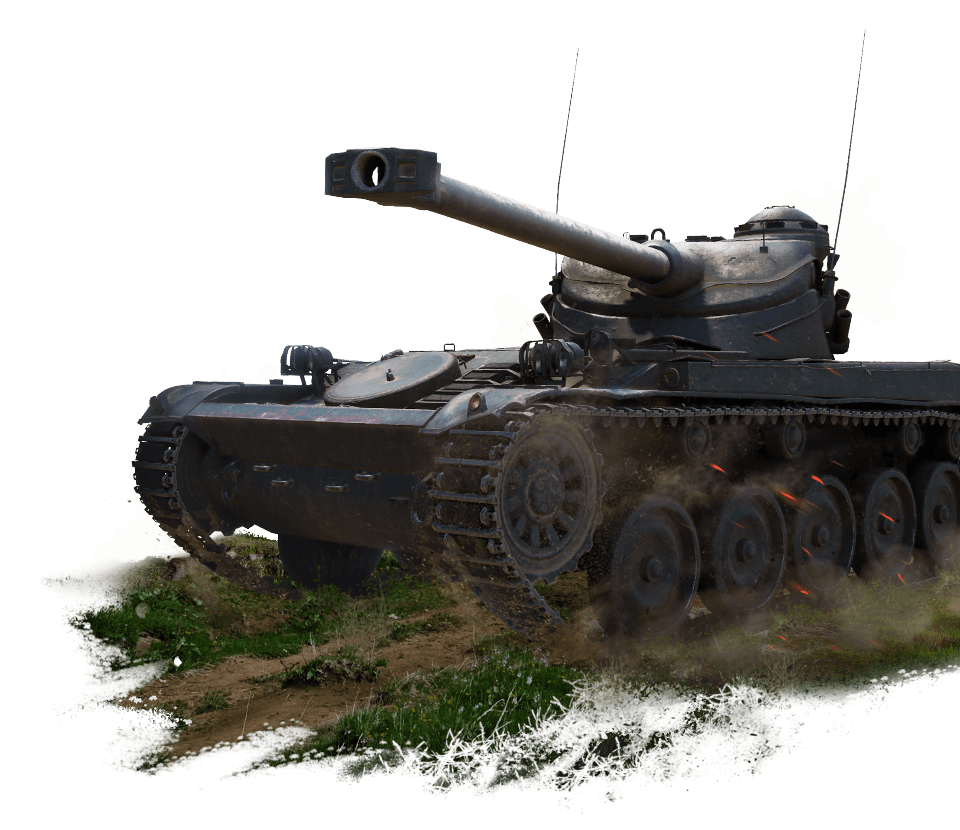

Video trailer
Five unique vehicle classes
SPEED
MOBILITY
STEALTHINESS
The fastest, most dynamic, nimble, but the most vulnerable class in
the game. Light tanks are natural-born scouts, and their main role is to
reveal enemy positions, surviving as long as they can.
T-54 ltwt., AMX 13 90, M41, Rheinmetall Panzerwagen


VERSATILITY
TEAMWORK
SECOND LINE OF COMBAT
A "jack of all trades", medium tanks have decent mobility
topped with good armor and endurance. Their main advantage is working in groups.
Т-54, E 50, M48 Patton, Bat.-Châtillon 25 t

ACCURACY
CONCEALMENT
TREMENDOES
DAMAGE
DAMAGE
Huge, powerful and heavily-armored, heavy tanks can both lead the charge to break through enemy lines and hold off advancing threats. Choose a heavy, if sheer power is your play style.
IS-7, KV-1, Maus, AMX 50 B

FIREPOWER
SURVIVABILITY
ARMOR
Long-range snipers with devastating firepower, hunting anyone spotted by allied scouts. A TD's battle plan is to secure a superior position and barrage enemies from a distance, remaining unseen.
T95, Jagdtiger, ISU-152, Strv 103

Greatest Tank Superpowers
System Requirements
| Type | Minimal | Recommended |
|---|---|---|
| Processor (CPU) | A processor with two or more physical cores supporting SSE2 technology |
Intel Core i5 (Desktop) |
| Memory (RAM) | 2 GB | 4 GB (or more) |
| Video Card | NVIDIA GeForce 8600, ATI Radeon HD 4550 | GeForce GTX660 (2 GB)/Radeon HD 7850 (2 GB) |
| Free hard drive space | ~ 40 GB | ~ 40 GB |
| Internet Connection | 256 Kbps | 1024 Kbps or higher (for voice chat) |
| Operating System | Windows 7/8/10 | Windows 7/8/10 - 64 bit |

JOIN THE BATTLE!
DOWNLOAD NOW